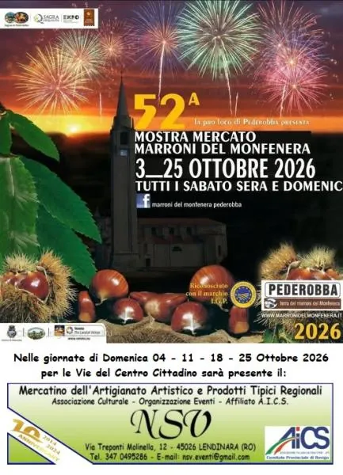

da dom 4 ott a dom 25 ott
52^ Mostra Mercato Marroni del Monfenera
L’Associazione Culturale NSV Organizzazione Eventi APS, affiliata A.I.C.S. – Comitato Provinciale di Rovigo, sarà presente a Pederobba (TV) in occasione della "52ª Mostra Mercato Marroni del Monfenera", nelle giornate di Domenica 04, 11, 18 e 25 Ottobre 2026, dalle 09:00 alle…
 Indicazioni
Indicazioni
- Costi e prenotazioni
- Costo non indicato · Prenotazione non indicata
- Programma
- Programma da verificare. Apri la fonte ufficiale per orari e possibili aggiornamenti.
- In caso di maltempo
- Nessuna indicazione specifica pubblicata.
- Note
- Acquisito automaticamente dalla fonte.
L’EVENTO
Descrizione completa
L’Associazione Culturale NSV Organizzazione Eventi APS, affiliata A.I.C.S. – Comitato Provinciale di Rovigo, sarà presente a Pederobba (TV) in occasione della "52ª Mostra Mercato Marroni del Monfenera", nelle giornate di Domenica 04, 11, 18 e 25 Ottobre 2026, dalle 09:00 alle 19:00, lungo le Vie del Centro Cittadino.
Un grande appuntamento autunnale dove la Mostra-Mercato Fieristica si affiancherà al tradizionale Mercatino delle Tradizioni Popolari, dell’Artigianato Artistico e delle Opere d’Ingegno Creativo, con tante originali creazioni, idee regalo per la Casa e il Tempo Libero e dimostrazioni pratiche delle tecniche di lavorazione direttamente sul posto.
Il percorso del Mercatino comprenderà anche una ricca rassegna di Prodotti Enogastronomici Tipici Regionali e Italiani, con degustazioni e specialità alimentari dolci e salate stagionali, oltre a proposte dedicate alla Salute Naturale, al Benessere e alla Cura del Corpo.
A completare l’atmosfera di festa, Laboratori Artistici e Didattici, Esibizioni, Animazioni, Spettacoli, Truccabimbi, il tradizionale Luna Park di Ottobre e tante altre iniziative.
E naturalmente, a farla da protagonisti, saranno i Marroni del Monfenera, disponibili cotti e crudi, insieme allo Stand Enogastronomico, che a pranzo e a cena proporrà specialità legate al territorio.
Per info Mostra Mercato, Mercatino e partecipazione come Espositore: Raffaella 347.0495286
Email: nsv.eventi@gmail.com
https://www.facebook.com/NsvOrganizzazioneEventi
IL PROGRAMMA
Programma e orari
Appuntamenti raccolti dalle fonti elencate. Dove manca un orario, non è ancora disponibile in questa scheda.
Programma pubblicato
- Dal 2026-10-04 al 2026-10-25
INFORMAZIONI UTILI
Prima di partire
- Controllare la fonte prima di partire.
ORGANIZZAZIONE